Survival Analysis FM#
Where the data at?#
input_path = '../Data/Processed_Data/'
output_path = '../Data/Processed_Data/'
Load Datasets#
import pandas as pd
x_train = pd.read_pickle(input_path+'embedding.pkl')
x_test = pd.read_pickle(input_path+'embedding_test.pkl')
y = pd.read_csv(input_path+'y.csv', index_col=0)
y_train = y[~y['Clinical Trial'].isin(['AML02','AML08'])]
y_train = y_train[y_train['os.evnt'].notnull()]
y_test = y[y['Clinical Trial'].isin(['AML02','AML08'])]
# Select samples in x that are in y_train
x_train = x_train.loc[y_train.index].to_numpy()
x_test = x_test.loc[y_test.index].to_numpy()
y_test.shape, y_train.shape
---------------------------------------------------------------------------
FileNotFoundError Traceback (most recent call last)
Input In [2], in <cell line: 3>()
1 import pandas as pd
----> 3 x_train = pd.read_pickle(input_path+'embedding.pkl')
4 x_test = pd.read_pickle(input_path+'embedding_test.pkl')
6 y = pd.read_csv(input_path+'y.csv', index_col=0)
File ~\AppData\Local\Programs\Python\Python310\lib\site-packages\pandas\io\pickle.py:190, in read_pickle(filepath_or_buffer, compression, storage_options)
124 """
125 Load pickled pandas object (or any object) from file.
126
(...)
187 4 4 9
188 """
189 excs_to_catch = (AttributeError, ImportError, ModuleNotFoundError, TypeError)
--> 190 with get_handle(
191 filepath_or_buffer,
192 "rb",
193 compression=compression,
194 is_text=False,
195 storage_options=storage_options,
196 ) as handles:
197
198 # 1) try standard library Pickle
199 # 2) try pickle_compat (older pandas version) to handle subclass changes
200 # 3) try pickle_compat with latin-1 encoding upon a UnicodeDecodeError
202 try:
203 # TypeError for Cython complaints about object.__new__ vs Tick.__new__
204 try:
File ~\AppData\Local\Programs\Python\Python310\lib\site-packages\pandas\io\common.py:865, in get_handle(path_or_buf, mode, encoding, compression, memory_map, is_text, errors, storage_options)
856 handle = open(
857 handle,
858 ioargs.mode,
(...)
861 newline="",
862 )
863 else:
864 # Binary mode
--> 865 handle = open(handle, ioargs.mode)
866 handles.append(handle)
868 # Convert BytesIO or file objects passed with an encoding
FileNotFoundError: [Errno 2] No such file or directory: '../Data/Processed_Data/embedding.pkl'
XGBoost#
from sklearn.model_selection import GridSearchCV
import xgboost as xgb
parameters = {
'reg_alpha': [1e-5, 1e-2, 0.1, 1, 100],
'max_depth': range (2, 6, 10),
'n_estimators': range(60, 220, 40),
'learning_rate': [0.1, 0.01, 0.05],
'gamma': [0, 0.25, 1, 10]
}
estimator = xgb.XGBClassifier(objective='binary:logistic', seed=42, n_jobs=-1)
grid_search = GridSearchCV(
estimator=estimator,
param_grid=parameters,
scoring = 'roc_auc',
cv = 5,
verbose=True
)
grid_search.fit(x_train,y_train['os.evnt'])
model = grid_search.best_estimator_.fit(x_train,y_train['os.evnt'])
xgboost = grid_search.best_estimator_
print('COG OS ROC AUC: %.3f ' % (model.score(x_train,y_train['os.evnt'])))
print('StJude OS ROC AUC: %.3f ' % (model.score(x_test,y_test['os.evnt'])))
Fitting 5 folds for each of 240 candidates, totalling 1200 fits
COG OS ROC AUC: 0.767
StJude OS ROC AUC: 0.676
xgboost
XGBClassifier(base_score=None, booster=None, callbacks=None,
colsample_bylevel=None, colsample_bynode=None,
colsample_bytree=None, early_stopping_rounds=None,
enable_categorical=False, eval_metric=None, feature_types=None,
gamma=0.25, gpu_id=None, grow_policy=None, importance_type=None,
interaction_constraints=None, learning_rate=0.1, max_bin=None,
max_cat_threshold=None, max_cat_to_onehot=None,
max_delta_step=None, max_depth=2, max_leaves=None,
min_child_weight=None, missing=nan, monotone_constraints=None,
n_estimators=180, n_jobs=-1, num_parallel_tree=None,
predictor=None, random_state=None, ...)In a Jupyter environment, please rerun this cell to show the HTML representation or trust the notebook. On GitHub, the HTML representation is unable to render, please try loading this page with nbviewer.org.
XGBClassifier(base_score=None, booster=None, callbacks=None,
colsample_bylevel=None, colsample_bynode=None,
colsample_bytree=None, early_stopping_rounds=None,
enable_categorical=False, eval_metric=None, feature_types=None,
gamma=0.25, gpu_id=None, grow_policy=None, importance_type=None,
interaction_constraints=None, learning_rate=0.1, max_bin=None,
max_cat_threshold=None, max_cat_to_onehot=None,
max_delta_step=None, max_depth=2, max_leaves=None,
min_child_weight=None, missing=nan, monotone_constraints=None,
n_estimators=180, n_jobs=-1, num_parallel_tree=None,
predictor=None, random_state=None, ...)Grid Search#
# # Code source: Gaël Varoquaux
# # Andreas Müller
# # Modified for documentation by Jaques Grobler
# # License: BSD 3 clause
import seaborn as sns
import numpy as np
import matplotlib.pyplot as plt
from matplotlib.colors import ListedColormap
from sklearn.model_selection import train_test_split
from sklearn.preprocessing import StandardScaler
from sklearn.pipeline import make_pipeline
from sklearn.neural_network import MLPClassifier
from sklearn.neighbors import KNeighborsClassifier
from sklearn.svm import SVC
from sklearn.gaussian_process import GaussianProcessClassifier
from sklearn.gaussian_process.kernels import RBF
from sklearn.tree import DecisionTreeClassifier
from sklearn.ensemble import RandomForestClassifier, AdaBoostClassifier
from sklearn.naive_bayes import GaussianNB
from sklearn.discriminant_analysis import QuadraticDiscriminantAnalysis
from sklearn.inspection import DecisionBoundaryDisplay
from sklearn.linear_model import LogisticRegression
sns.set_theme(style='white')
names = [
"Nearest Neighbors",
"Linear SVM",
"RBF SVM",
"Gaussian Process",
"Random Forest",
"Neural Net",
"Naive Bayes",
"QDA",
"XGBoost",
"Logistic Regression"
]
classifiers = [
KNeighborsClassifier(3),
SVC(kernel="linear", C=0.025),
SVC(gamma=2, C=1),
GaussianProcessClassifier(random_state=42, n_jobs=-1),
RandomForestClassifier(max_depth=5, n_estimators=10, max_features=1),
MLPClassifier(activation='tanh', alpha=0.001, batch_size=100,
hidden_layer_sizes=(50,), max_iter=1000),
GaussianNB(),
QuadraticDiscriminantAnalysis(),
xgboost,
LogisticRegression()
]
# Define scatterplot
sns.set_theme(style='white')
plt.subplots(figsize=(7, 5))
sns.scatterplot(data=x_train, x=x_train[:, 0], y=x_train[:, 1],
s=15, hue=y_train['os.evnt'],
linewidth=0, alpha=1)
<AxesSubplot: >
cm_bright = ListedColormap(['#1f77b4', '#ff7f0e'])
cm = ListedColormap(['#1f77b4', '#ff7f0e'])
ax = plt.subplot()
# Plot the training points
ax.scatter(x_train[:, 0], x_train[:, 1], c=y_train['os.evnt'], cmap=cm_bright, edgecolors="k", s=20)
# Plot the testing points
# ax.scatter(
# x_test[:, 0], x_test[:, 1], c=y_test['os.evnt'], cmap=cm_bright, alpha=0.6, edgecolors="k", s=20
# )
ax.set_xticks(())
ax.set_yticks(())
ax.set_title("Input Data")
plt.tight_layout()
plt.show()
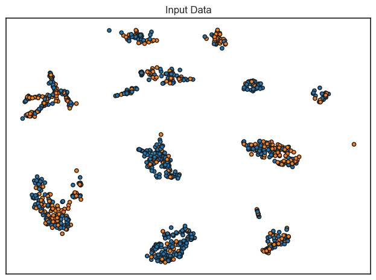
for name, clf in zip(names, classifiers):
ax = plt.subplot()
x_min, x_max = x_train[:, 0].min() - 0.5, x_train[:, 0].max() + 0.5
y_min, y_max = x_test[:, 1].min() - 0.5, x_test[:, 1].max() + 0.5
# Test classifier
# clf = make_pipeline(StandardScaler(), clf)
clf.fit(x_train, y_train['os.evnt'])
score = clf.score(x_test, y_test['os.evnt'])
DecisionBoundaryDisplay.from_estimator(
clf, x_train, cmap=cm, alpha=0.4, ax=ax, eps=0.5
)
sns.scatterplot(data=x_train, x=x_train[:, 0], y=x_train[:, 1],
s=15, hue=y_train['os.evnt'],
linewidth=0.5, alpha=1, ax=ax,edgecolor='k')
ax.set_xticks(())
ax.set_yticks(())
ax.set_title(name)
ax.text(
x_max - 0.3,
y_min + 0.3,
("hi"+"%.2f" % score).lstrip("0"),
size=15,
horizontalalignment="right",
)
ax.set_xlim(x_min, x_max)
ax.set_ylim(y_min, y_max)
plt.tight_layout()
plt.show()
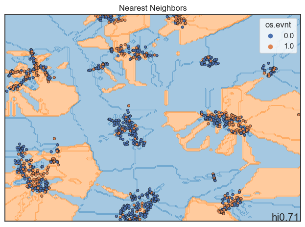
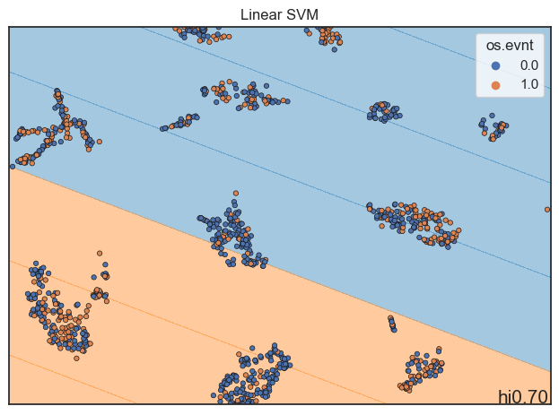
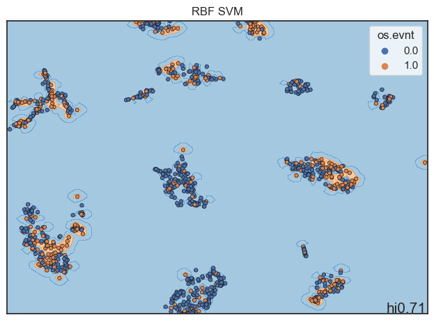
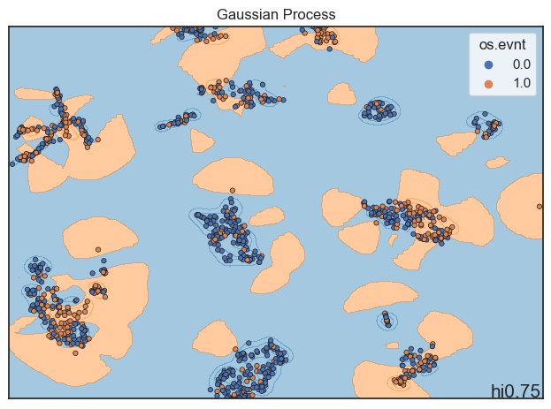
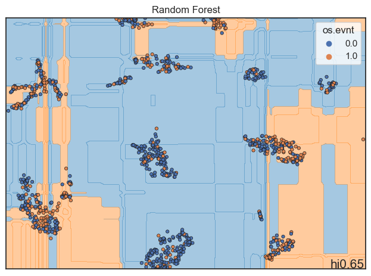
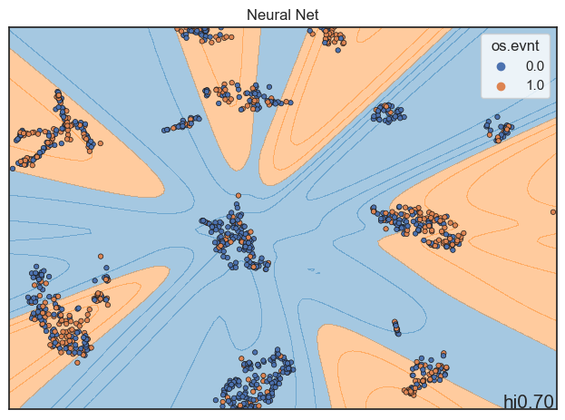
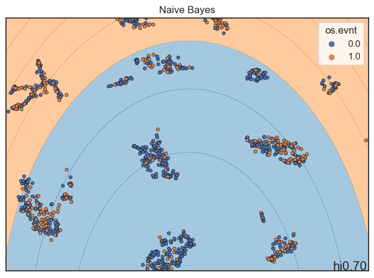
 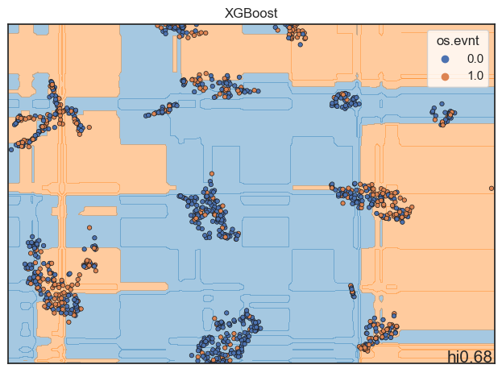
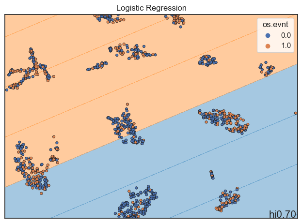
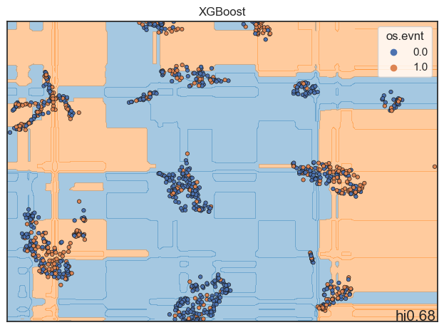
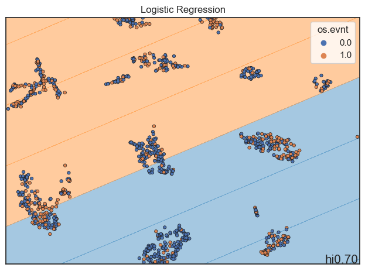
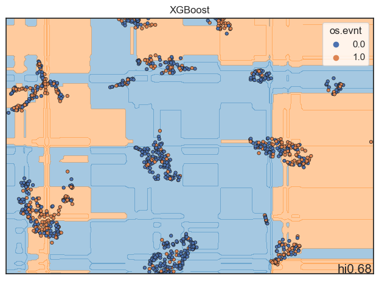
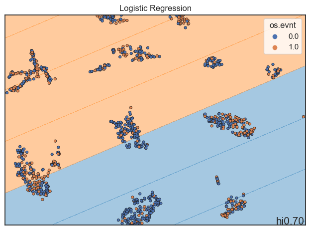
Model Evaluation#
from sklearn.gaussian_process import GaussianProcessClassifier
from sklearn.model_selection import GridSearchCV
from sklearn.gaussian_process.kernels import RBF
parameters = {}
estimator = GaussianProcessClassifier(random_state=42, n_jobs=-1)
grid_search = GridSearchCV(
estimator=estimator,
param_grid=parameters,
scoring = 'roc_auc',
n_jobs=-1,
cv = 10,
verbose=True
)
grid_search.fit(x_train,y_train['os.evnt'])
model = grid_search.best_estimator_.fit(x_train,y_train['os.evnt'])
gpc = grid_search.best_estimator_
Fitting 10 folds for each of 1 candidates, totalling 10 fits
print('COG OS ROC AUC: %.3f ' % (model.score(x_train,y_train['os.evnt'])))
print('StJude OS ROC AUC: %.3f ' % (model.score(x_test,y_test['os.evnt'])))
COG OS ROC AUC: 0.765
StJude OS ROC AUC: 0.755
gpc
GaussianProcessClassifier(n_jobs=-1, random_state=42)In a Jupyter environment, please rerun this cell to show the HTML representation or trust the notebook.
On GitHub, the HTML representation is unable to render, please try loading this page with nbviewer.org.
GaussianProcessClassifier(n_jobs=-1, random_state=42)
Save Predictions#
score_name = "MethylScore"
y_train['MethylScore'] = model.predict(x_train)
y_train['MethylScore Categorical'] = y_train['MethylScore'].map({1:'High', 0:'Low'})
y_train['MethylScore_cat_bin'] = y_train['MethylScore']
y_test['MethylScore'] = model.predict(x_test)
y_test['MethylScore Categorical'] = y_test['MethylScore'].map({1:'High', 0:'Low'})
y_test['MethylScore_cat_bin'] = y_test['MethylScore']
C:\Users\flourenco\AppData\Local\Temp\ipykernel_6396\33214688.py:5: SettingWithCopyWarning:
A value is trying to be set on a copy of a slice from a DataFrame.
Try using .loc[row_indexer,col_indexer] = value instead
See the caveats in the documentation: https://pandas.pydata.org/pandas-docs/stable/user_guide/indexing.html#returning-a-view-versus-a-copy
y_test['MethylScore'] = model.predict(x_test)
C:\Users\flourenco\AppData\Local\Temp\ipykernel_6396\33214688.py:6: SettingWithCopyWarning:
A value is trying to be set on a copy of a slice from a DataFrame.
Try using .loc[row_indexer,col_indexer] = value instead
See the caveats in the documentation: https://pandas.pydata.org/pandas-docs/stable/user_guide/indexing.html#returning-a-view-versus-a-copy
y_test['MethylScore Categorical'] = y_test['MethylScore'].map({1:'High', 0:'Low'})
C:\Users\flourenco\AppData\Local\Temp\ipykernel_6396\33214688.py:7: SettingWithCopyWarning:
A value is trying to be set on a copy of a slice from a DataFrame.
Try using .loc[row_indexer,col_indexer] = value instead
See the caveats in the documentation: https://pandas.pydata.org/pandas-docs/stable/user_guide/indexing.html#returning-a-view-versus-a-copy
y_test['MethylScore_cat_bin'] = y_test['MethylScore']
Save File#
# Save y_train and y_test in the same file
y = pd.concat([y_train, y_test])
y.to_csv(output_path+'y_MethylScore.csv')